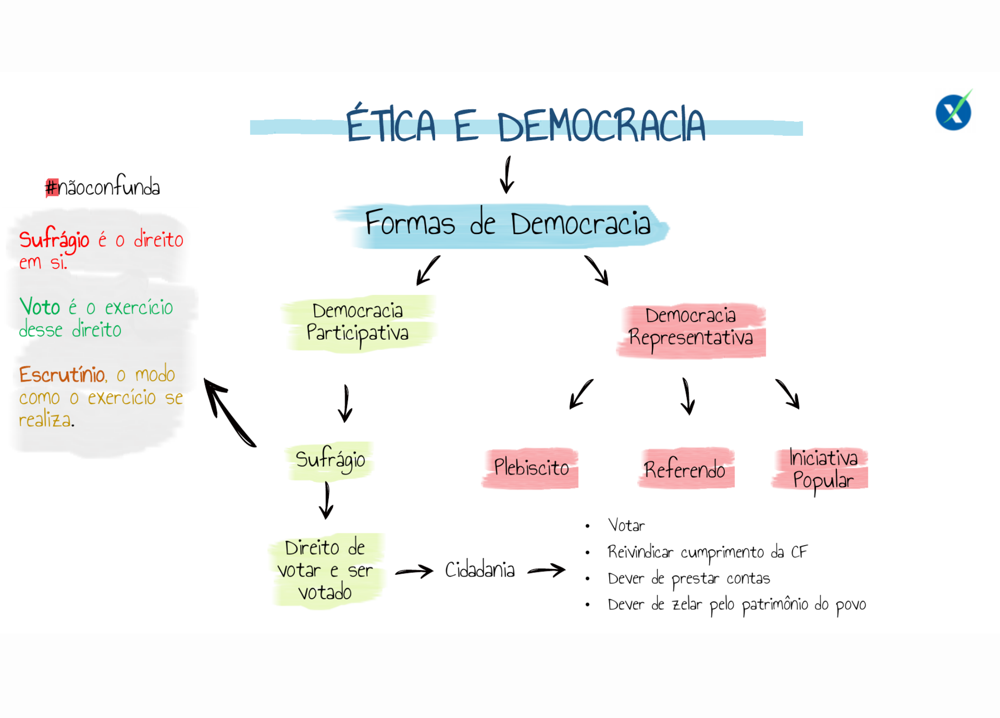
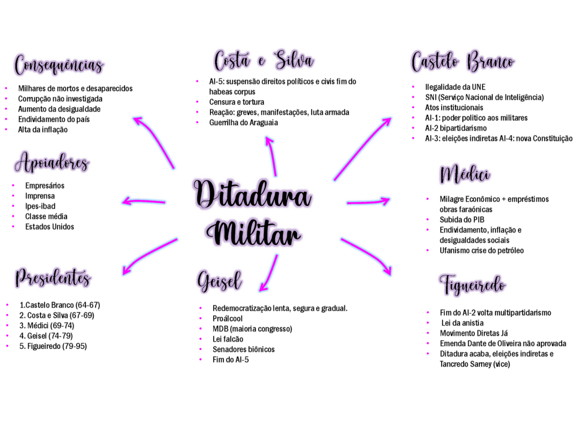
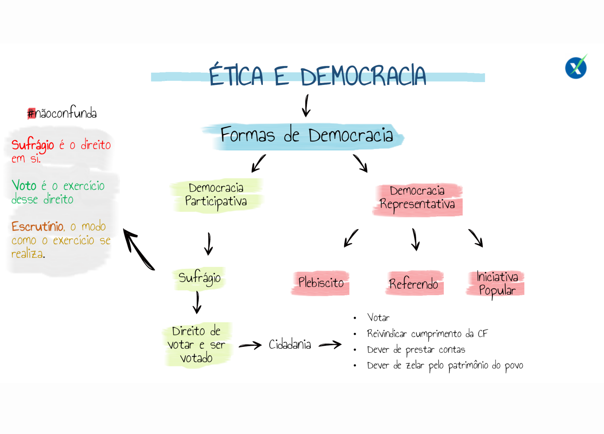
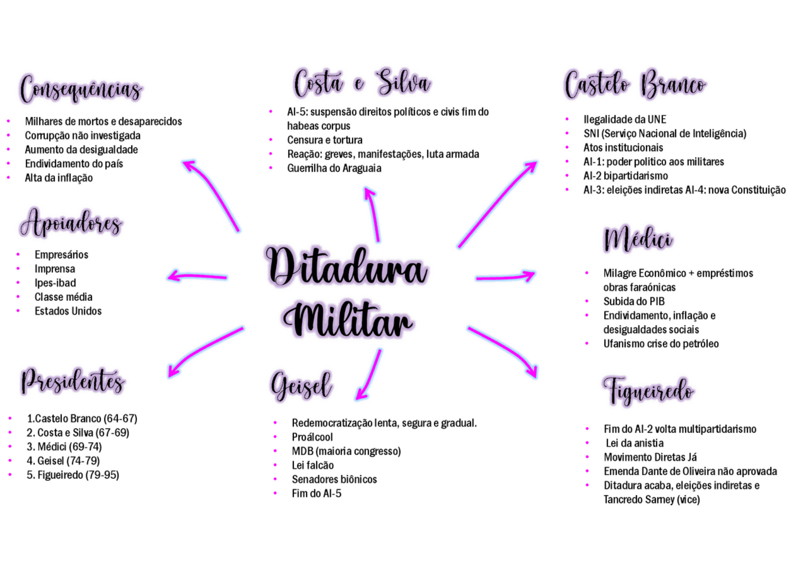
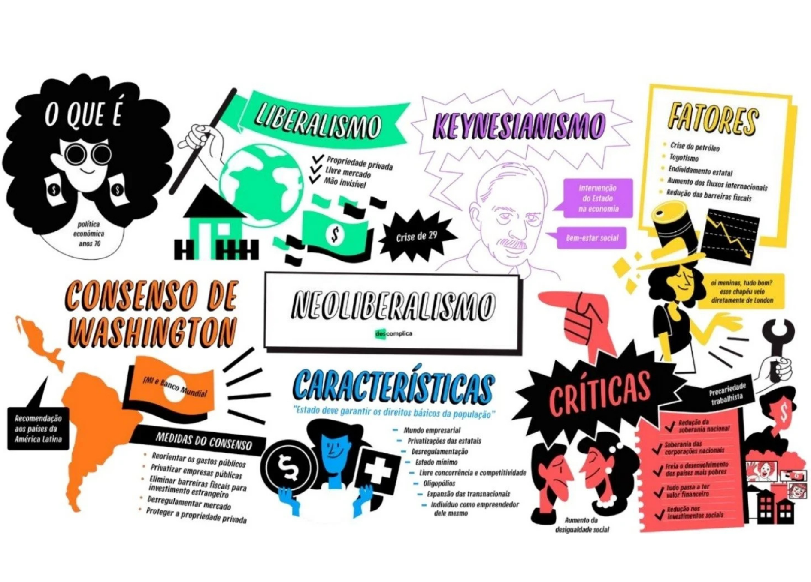
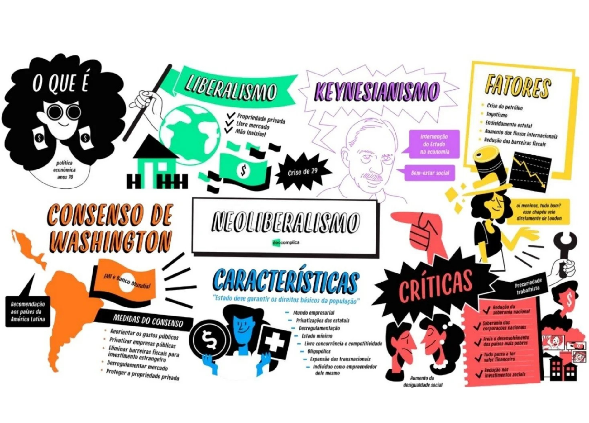

SOBRE
Esse site tem por objetivo auxiliar os estudantes do 3º ano do Ensino Médio a estudar para o Avalia Sesi que irá ocorrer em Outubro. Aqui você encontrará informações sobre a história política do Brasil, incluindo a evolução das constituições, períodos de democracia e ditaduras, políticas econômicas, direitos humanos e sociais, além de recursos complementares como mapas mentais, simulados e vídeos aulas.
O conteúdo é organizado de forma a facilitar o estudo e a compreensão dos principais temas relacionados à política brasileira, com foco na história recente do país.
Esperamos que este material seja útil para sua preparação e que contribua para o seu aprendizado sobre a história política do Brasil.
História Constitucional
A história constitucional do Brasil é marcada por diversas constituições que refletem as mudanças políticas e sociais do país.
Importância de uma constituição
A Constituição é a lei suprema de um Estado, estabelecendo a estrutura do governo, os direitos dos cidadãos e os limites do poder estatal. Serve como um contrato social, garantindo a proteção dos direitos fundamentais e a organização da sociedade. A elaboração pode ocorrer por promulgação, onde representantes eleitos participam do processo, ou por outorga, onde o governo impõe a Constituição sem consulta popular, como ocorreu em várias fases da história brasileira.
Histórico das constituições brasileiras
O Brasil já teve várias constituições, cada uma refletindo o contexto histórico de sua época.
- Constituição de 1824: Outorgada por D. Pedro I após a dissolução da Assembleia Constituinte. Centralizadora e monárquica, excluídas mulheres e escravizados do voto. Introduziu a figura do "cidadão ativo" (com direitos políticos) e do "cidadão passivo" (sem direitos), criando uma divisão social.
- Constituição de 1891: Promulgada após a Proclamação da República, estabelecendo o federalismo e a separação entre Estado e Igreja. Introduziu o habeas corpus, mas restringiu o voto a homens alfabetizados maiores de 21 anos, perpetuando a exclusão de pobres e negros. Marcada pelo coronelismo e práticas de voto de cabresto.
- Constituição de 1934: Resultado das pressões sociais e políticas após a Revolução de 1930. Avanços significativos, como a introdução do sufrágio feminino e a concessão do trabalho infantil. Apesar dos avanços, o presidente foi eleito, limitando a verdadeira representação popular.
- Constituição de 1937 ("Polaca"): Imposta por Getúlio Vargas após um golpe, inspirado em regimes autoritários europeus. Concentrou o poder no presidente, abolindo eleições diretas e institucionalizando a censura. Manteve direitos sociais, mas controlou sindicatos e proibiu greves.
- Constituição de 1946: Promulgada após a queda do Estado Novo, reconhecida como democrática. Garantiu liberdades civis, eleições regulares e pluralidade partidária. Contudo, manteve a exclusão de analfabetos e limitou o direito de greve, além de cassar o Partido Comunista em 1947.
- Constituição de 1967: Criada durante a ditadura civil-militar, retirou eleições diretas para presidente, governadores e prefeitos. Constitucionalizou medidas autoritárias, como o AI-5 em 1968, que intensificaram a repressão, censura e tortura de opositores.
Democracia e ditaduras
A democracia no Brasil passou por períodos de ditadura militar, mas atualmente é um sistema democrático consolidado.
Definições e Características
Democracia é um sistema político onde o povo exerce a soberania, podendo ser direta (participação direta nas decisões) ou representativa (eleição de representantes). Envolve não apenas o direito ao voto, mas também a igualdade, equidade e participação real na vida política. A democracia liberal associa-se à economia de mercado, promovendo uma ideia de meritocracia, que, embora atraente, ignora desigualdades sociais, econômicas e culturais.
Desafios da Democracia:
- Desigualdades sociais persistentes que afetam a participação política.
- Distorções no sistema eleitoral, como o voto distrital e a influência do poder econômico nas eleições.
- A necessidade de garantir direitos civis, políticos, sociais, culturais e ambientais em uma sociedade plural.
Tipos de ditaduras
As ditaduras podem ser militares, civis ou mistas, dependendo da natureza do regime imposto.
Regimes ditatoriais são caracterizados pela concentração de poder, restrição das liberdades civis e políticas, e ausência de eleições livres. A origem do termo remanescente à Roma Antiga, onde a ditadura era uma solução temporária para crises, mas na modernidade, refere-se a regimes antidemocráticos instaurados por golpes de Estado.
Tipos de Ditaduras:
- Autoritária: Concentração de poder, restrição de participação política, censura e manutenção do status quo. Exemplo: Regimes militares na América Latina entre 1960 e 1980.
- Totalitária: Controle total da vida pública e privada, com um líder considerado infalível, partido único, polícia política e propaganda ideológica constante. Exemplos: Nazismo, Fascismo e Stalinismo.
Políticas econômicas
As políticas econômicas no Brasil têm evoluído ao longo dos anos, com diferentes enfoques e resultados.
Planos econômicos
Diversos planos econômicos foram implementados para controlar a inflação e estimular o crescimento econômico.
Neoliberalismo
O neoliberalismo influenciou as políticas econômicas brasileiras, promovendo a privatização e a liberalização do mercado.
Direitos humanos e sociais
Os direitos humanos e sociais são fundamentais para garantir a dignidade e a igualdade entre os cidadãos brasileiros.
Programas sociais
A Constituição de 1988, conhecida como a "Constituição Cidadã", consolida os direitos sociais, como saúde, educação e assistência social. O Sistema Único de Saúde (SUS) garantiu acesso à saúde para todos, mas enfrenta desafios de financiamento e gestão. Programas de transferência de renda, como o Bolsa Família, foram implementados para reduzir a pobreza, mas ainda há críticas sobre sua eficácia e sustentabilidade.
Educação
A educação é um direito fundamental, essencial para a inclusão social e a promoção da cidadania. Apesar dos avanços, o Brasil ainda enfrenta desafios importantes, como desigualdades regionais sem acesso à educação de qualidade, baixo investimento em infraestrutura escolar e formação de professores, e exclusão histórica de grupos marginalizados, como negros, indígenas e populações rurais.
O Brasil atual
O cenário político brasileiro recente é marcado por mudanças significativas e desafios sociais.
Governo Temer
Michel Temer assumiu a presidência após o impeachment de Dilma Rousseff, promovendo reformas polêmicas. Implementou reformas neoliberais, como a Lei do Teto de Gastos, que limitou os investimentos nas áreas sociais, gerando críticas sobre o impacto na saúde e na educação.
Eleição de Bolsonaro
Jair Bolsonaro foi eleito presidente em 2018, trazendo novas diretrizes políticas e econômicas ao país. Representou uma guinada conservadora, com promessas de combate à corrupção e à criminalidade, mas também com discursos de intolerância e retrocessos em direitos humanos. A administração criticou sua postura em relação ao meio ambiente, direitos das minorias e políticas sociais.
Reformas e direitos
As reformas trabalhista e previdenciária impactaram diretamente os direitos dos trabalhadores brasileiros. A Reforma Trabalhista (2017) alterou a CLT, flexibilizando os direitos trabalhistas e precarizando as relações de trabalho. A Reforma da Previdência (2019) aumentou a idade mínima para aposentadoria e alterou regras de concessão, afetando principalmente os trabalhadores mais vulneráveis. Além disso, houve ameaças aos direitos humanos, com cortes em políticas de igualdade racial e de gênero, além de ataques a movimentos sociais e organizações da sociedade civil.
Desmatamento e Etnobiopirataria
O desmatamento na Amazônia e a etnobiopirataria são questões ambientais e sociais de grande relevância no Brasil atual.
Material complementar
Mapas Mentais

 



 
